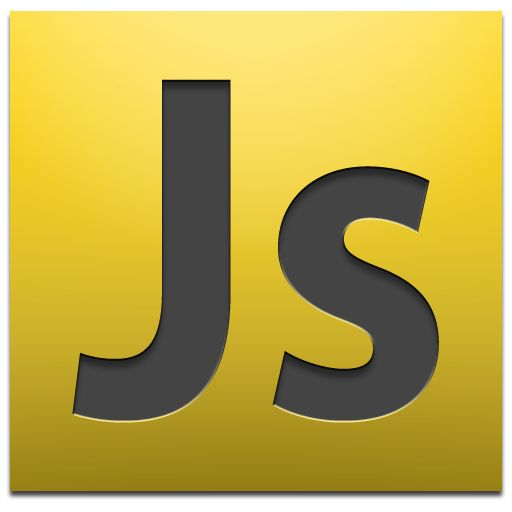

| e-mail: | dssizh@gmail.com |
|---|---|
| address: | Izhevsk |
| phone: | +123456789 |
Dmitrii Sutygin |
 |
|---|
I have 15+ years of experience working as an IT specialist. I worked as a 1C software developer and as a project manager. I have been interesting in backend and frontend development for the last two years. I studied Java and some frameworks, such as Spring by myself. Also, I have experience in working with build management tools and testing frameworks. My goal is to become a proficient software developer. I am interested in both frontend development and backend development.
- HTML/CSS/JS(basic)
- Java SE, Spring, Spring Boot
- JUnit
- Maven, Gradle
- Git
function checkBag() {
var itemsObject = JSON.parse(localStorage.getItem("sp_bag"));
if (itemsObject != null) {
bag.itemsInBag = JSON.parse(localStorage.getItem("sp_bag"));
bag.updateBagCounter();
}
}
You can find some of my educational projects here.
I do not have any commercial experience in the frontend or backend development, but I made several projects for educational purpose. The link on some of them you can find above.
- Codeacademy.com
- Introduction to HTML
- Learn CSS
- htmlacademy.ru:
- HTML+CSS
- Udemy.com:
- Spring & Hibernate for Beginners (includes Spring Boot
- Javarush.ru:
- 20th level
- Coursera.org:
- Object Oriented Programming in Java
I studied English at school and at university. Now I am trying to practice English every day. In my opinion, my level of English is B2.